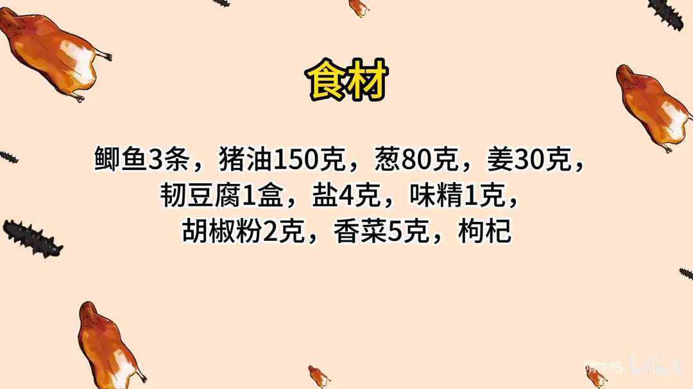
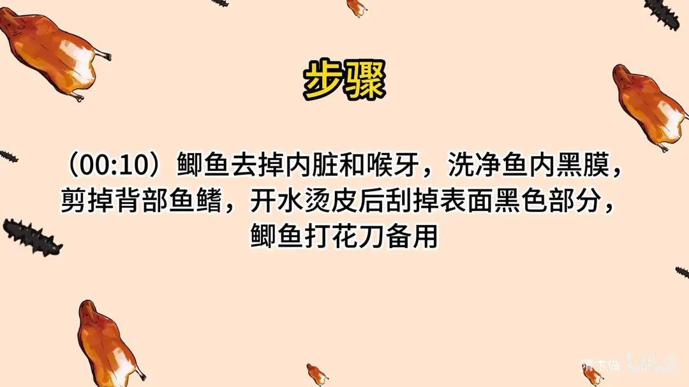
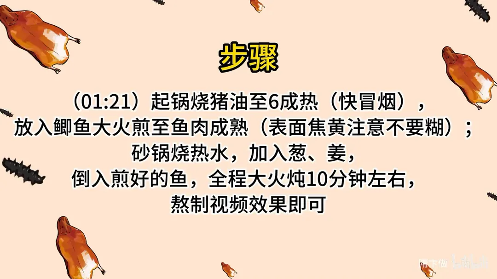
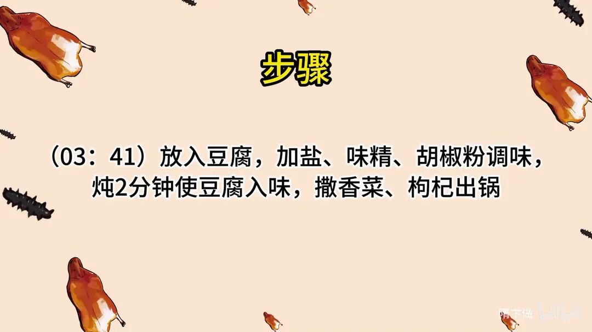

奶汤鲫鱼
隋卞一做。鲫鱼 3 条去内脏喉牙、撕净腹内黑膜，开水烫皮后刮掉表面黑色部分，两面打花刀。猪油 150g 烧到 6 成热（快冒烟）大火煎至表面焦黄，冲入砂锅热水，全程大火滚 10 分钟出奶白汤，再下韧豆腐、盐 4g、味精 1g、胡椒粉 2g 炖 2 分钟。
原视频：https://www.bilibili.com/video/BV1gh4y1q7bx
食材
鲫鱼、猪油 等 10 样
| 类别 | 用料 | 用量 |
|---|---|---|
| 主料 | 鲫鱼 | 3 条 |
| 配料 | 猪油 | 150g |
| 配料 | 葱 | 80g |
| 配料 | 姜 | 30g |
| 主料 | 韧豆腐 | 1 盒 |
| 调料 | 盐 | 4g |
| 调料 | 味精 | 1g |
| 调料 | 胡椒粉 | 2g |
| 点缀 | 香菜 | 5g |
| 点缀 | 枸杞 | 适量 |
步骤
- 处理鲫鱼：鲫鱼去掉内脏和喉牙，洗净鱼内黑膜，剪掉背部鱼鳍。
- 烫皮打刀：开水烫皮后刮掉表面黑色部分，鲫鱼打花刀备用。
- 煎鱼：起锅烧猪油至 6 成热（快冒烟），放入鲫鱼大火煎至鱼肉成熟，表面焦黄，注意不要糊。
- 大火滚汤：砂锅烧热水，加入葱、姜，倒入煎好的鱼，全程大火炖 10 分钟左右，熬到汤色如奶。
- 下豆腐调味：放入豆腐，加盐、味精、胡椒粉调味，炖 2 分钟使豆腐入味。
- 出锅：撒香菜、枸杞出锅。
讲解要点
难度：★★★☆☆（难在煎透和大火滚汤，火一小汤就白不了）
为什么这么做
- 选半斤左右的鲫鱼、两面打花刀：大小适中，肉嫩骨易煎透；厚肉处划开，热才进得去，鱼煎得透、出味快。
- 去喉牙、刮净腹内黑膜、剪背鳍，再开水烫皮刮黑：黑膜和喉牙是腥味最重的地方，背鳍煎时会烧出黑沫子；烫过之后残余黑膜立起来，一刮就掉，既是去腥也是去色，汤才白。
- 用猪油煎：猪油香、烟点高，鱼皮煎得香而不焦；脂肪在滚汤里乳化，汤更白更浓。
- 一定要煎透到焦黄：煎透才有美拉德反应的香气；没煎透就下汤，腥味全跑到汤里，汤也不白。
- 冲热水、全程大火滚：高温加翻滚让油脂和蛋白充分乳化成悬浊液，这才是奶白的来源，小火只会清汤。
- 豆腐后下、只咕嘟 2 分钟：豆腐是热的就行，久煮会起蜂窝、变老。
- 胡椒粉必放：提鲜、压腥，量要小，能尝到一点辣但不能盖住鱼的鲜。
容易翻车
- 鱼没煎透就下汤，汤色发灰、腥味重。
- 火不够大，汤一直是清的。
- 煎完鱼的油和葱姜不换，汤里会有黑渣、发黄。
- 豆腐下太早，煮成蜂窝、容易碎。
- 腹内黑膜没刮干净，汤再白也有腥味。
热评补充
- 煎完鱼后把煎鱼的油和葱姜弃掉、鱼另换锅炖，否则汤里会有黑渣、颜色发黄；只留葱姜料酒胡椒粉盐和味精，汤一样洁白。
原片尾卡




原片文案
AI 字幕校准稿
天气越来越冷了，要说秋冬天最养人的汤，那肯定得是这个奶汤鲫鱼。首先得选鲫鱼，一条在半斤左右，大点小点并不重要。
这个在家里边，您用什么鱼都行，只要把方法学会了，鲫鱼、鲤鱼、草鱼，好多鱼都可以做。
先教你们鲫鱼怎么下手。把里面的东西掏出来，鱼泡、鱼籽都要；喉牙去掉。冲水，拿手把边上的黑膜全部都刮干净。然后把背部这个鳍给它剪掉，它会产生那个黑沫子，而且腥，洗成这样就可以了。
下一步要烫皮。放水里烫一下，表面鱼鳞去掉的地方就全支楞起来了，拿刀开始刮，刮掉的都是黑膜。这一步也是去腥，而且还是去那个色，保证咱们做出来的鱼汤比较白。然后打一下花刀，刀口要深到鱼骨。
咱们开始做鲫鱼汤。干净的锅里坐上猪油，用猪油煎不是必须的，但是用猪油煎完的那个鱼很香，而且汤会很白。其实嫌麻烦，就把电饼铛刷上油，像煎馅饼一样给它煎熟煎透，往汤里一倒，一开火就齐了。
煎的时候一定要煎透，表面黄黄的、焦焦的就行了，别煎糊。有人图汤浓会把鱼肉捣碎了一起煎，让蛋白质全融进汤里，可那样肉就柴了、有点浪费，咱们还是整条煎。旁边拿砂锅坐上热水，里面放上葱姜，然后把煎完的鱼倒进去，全程大火炖汤。就要大火炖汤才能变成浓。
炖了三分钟，汤色已经稍微有点变浑了，再炖一会儿。咱们在家就这个颜色就差不多了，因为家里的火没有酒店那么猛。其实酒店在做高级鲫鱼汤的时候，不光是鲫鱼，还要加一些浓汤，白的比这还要透，所以你在家熬到这个颜色，不要怀疑自己，这就是正常的颜色。
然后把豆腐倒进去。搁上豆腐之后咱们调味，加盐、来点味精、胡椒粉——这鲫鱼汤胡椒粉必须得放，提一下味道，一勺准。加上豆腐之后让它咕嘟两分钟，不着急，多咕嘟一会儿，让那个鱼汤味进到豆腐里面去，豆腐热了就行。咱们把香菜、枸杞撒上面。
汤没得说，是真好喝的，鱼肉鲜味完全做出来了。那个胡椒粉的量加了也挺合适的，你能喝出一点点胡椒粉的辣味，但这个辣不会影响鱼肉本身的鲜，真的就是咸鲜。这个是没有加浓汤的，就真的是纯鱼熬出来的，暖暖乎乎的一大锅。